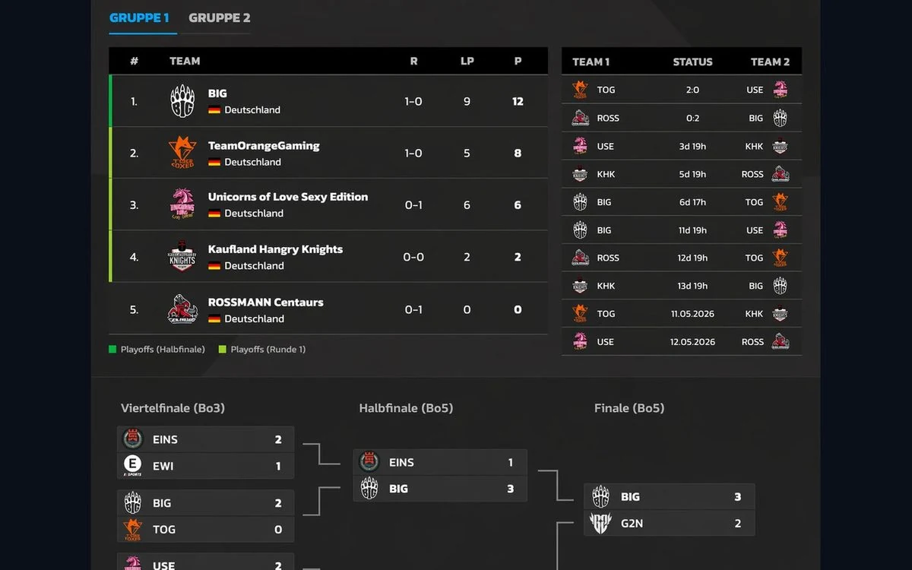

Case study · Prime League · 2023
An esports platform people can follow
Prime League ran several leagues on one platform, and its navigation followed the league's data model, not the people using it. As the UX designer on the team, I researched why people got lost and restructured the platform around the one question everyone had: when and where is the next match?
- −30 % registration drop-off
- +10 % active users
- 50,000+ users per season
- Role
- UX Designer: research, analysis, ideation and wireframes. The UI came from the team's UI designer.
- Team
- 1 UI designer, 1 product manager, 3 developers
- Product
- Prime League, 99Damage League and DreamHack Leipzig on one platform, 8 competitions
- Method
- Hotjar, Maze, moderated usability tests, card sorting with 25 people
Context
Players, teams and spectators couldn't find what they came for
Prime League is one of the largest League of Legends competitions in the DACH region, with 1,500+ teams and 6,000+ registered players per season. The same platform also ran 99Damage League and DreamHack Leipzig. Three groups use it, each with its own question.
- Players Compete "When and where is my next match?"
- Teams Prepare "Who do we play next, and how strong are they?"
- Spectators Watch "Where does the tournament stand right now?"
The platform answered none of them directly. Every path started with the league, then the season, then the division, and the match came last.
Research
People grouped everything around the match
What we saw. Hotjar recordings showed people scrolling past the main navigation. In moderated tests they knew roughly where to look, but could not predict what they would find there.
What confirmed it. In a card sort with 25 players, teams and spectators, people grouped content by what they wanted to do around a match, not by the league structure.
Insight
The league structure is how the data is stored, not how people use it. The navigation had to start from the match.
The solution
Putting the next match on the start page
"When and where is my next match?"
Hypothesis. If the navigation starts from the match instead of the league, more people finish registration and come back.
Approach. I restructured the information architecture of all 8 competitions around three entry points: compete, prepare, watch. The league became a filter instead of the front door. Your next match, your team and the live tournament are now one step from the start page.
Before · league-first
After · match-first


Result
After the relaunch, registration drop-off fell by 30 % (Google Analytics) and active users grew by 10 %. We attribute most of it to taking part in the league getting easier.
What I took away
What I still use from this project
- Watch before you askThe Hotjar recordings showed the problem before any interview did.
- One generic user would have fit none of the three groupsSo each group got its own entry point: compete, prepare, watch.
- The data model is not the menuHow content is stored rarely matches how it is looked for.
What I would do differently
Agree on targets before the work starts. We tracked the right numbers in Google Analytics, but shared targets up front would have helped me argue for decisions, especially as the newest designer on the team.
Happy to tell you how the card sort changed the navigation.
Let's talk